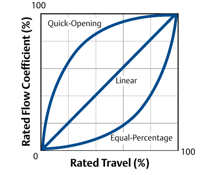

Three Inherent Flow Characteristics

- 1Quick-opening — most of the flow-area change happens in the first small fraction of travel, then the curve flattens
- 2Linear — flow coefficient rises in direct proportion to travel
- 3Equal-percentage — each travel increment raises the flow coefficient by a fixed percent of the flow already passing, the exponential curve
After Control Valve Handbook, 6th ed., Fig. 1.19 — used directly, own printed curve labels retained. Component Index: cvh-cmp-inherent-characteristics-graph.